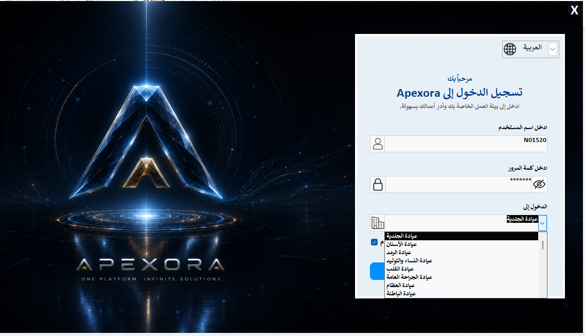
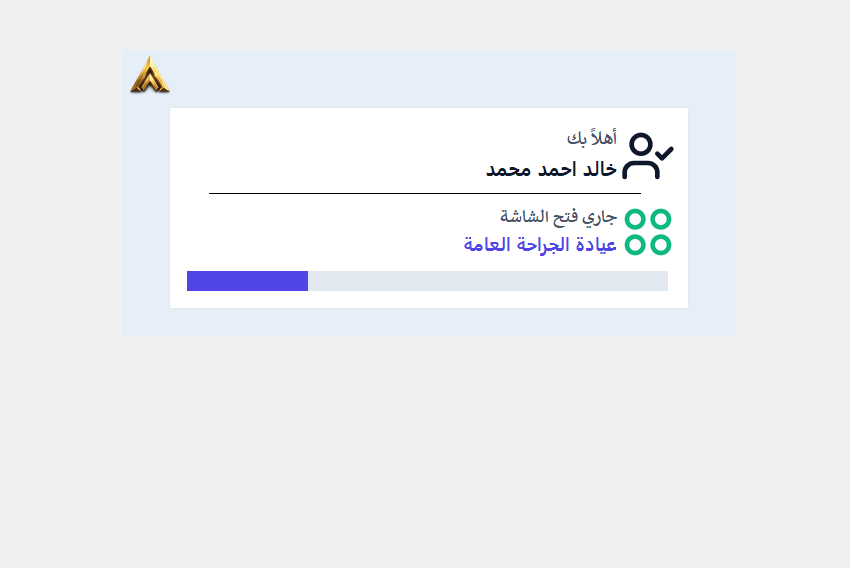
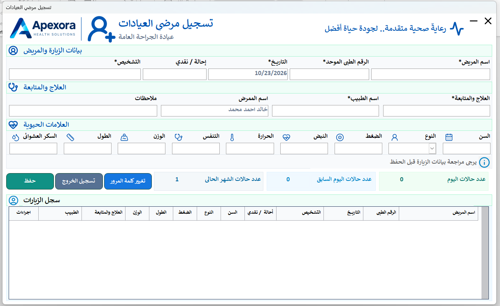
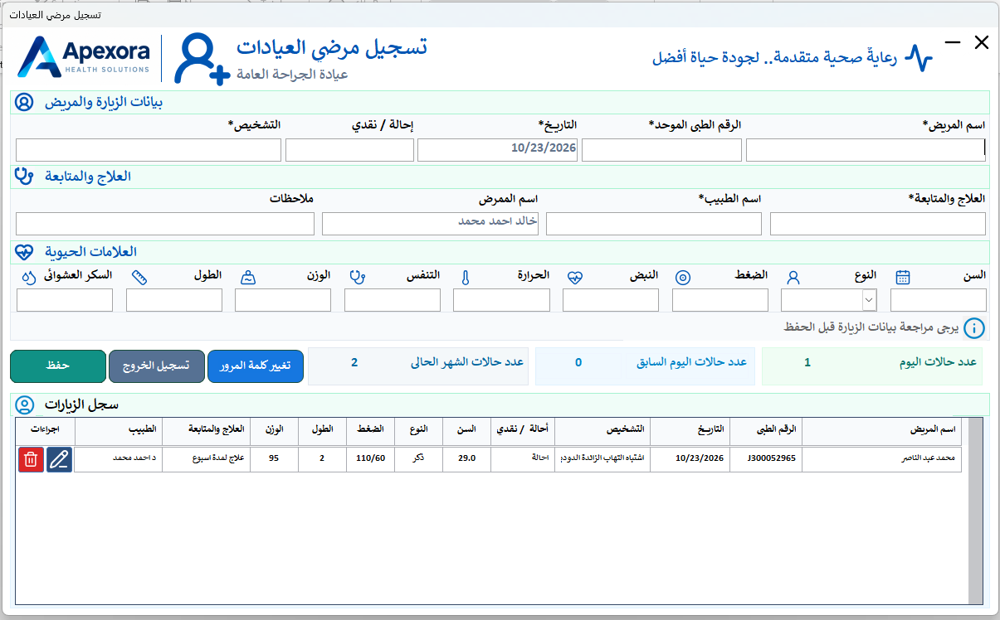

01
تسجيل الدخول واختيار العيادة
الخطوة الأولى للوصول إلى النظامتبدأ رحلتك في النظام عبر خطوتين أساسيتين لضمان الأمان وتوجيهك لبيئة العمل المخصصة لك:
- إدخال اسم المستخدم وكلمة المرور الخاصة بك بدقة.
- اختيار العيادة المراد العمل بها من القائمة المنسدلة (مثل: عيادة الجراحة العامة، الأسنان، الجلدية...).
يضمن هذا النظام توجيه الممرض للعيادة الصحيحة مباشرة مع حفظ كافة الصلاحيات والأمان.

02
الترحيب وتأكيد بيئة العمل
التحقق الآلي وشاشة التحميل
بعد إتمام تسجيل الدخول بنجاح، ستظهر لك شاشة التحميل الترحيبية لتأكيد بيانات الممرض:
- عرض اسم المستخدم بشكل مؤكد (مثل: خالد أحمد محمد).
- تأكيد اسم العيادة التي تم الاتصال بها (مثل: عيادة الجراحة العامة).
- شريط تقدم آلي يفتح واجهة العمل المخصصة لمهامك فوراً.
03
إدخال بيانات المريض والعلامات الحيوية
واجهة الشغل الرئيسية للتمريضهذه هي نافذة العمل الرئيسية للتمريض، حيث يتم إكمال وتسجيل تفاصيل زيارة المريض بكل دقّة:
- إكمال الحقول الأساسية الإجبارية المتبوعة بعلامة النجمة * مثل (اسم المريض، الرقم الطبي، التاريخ، التشخيص، والعلاج).
- إدخال العلامات الحيوية كاملة (الضغط، النبض، الحرارة، التنفس، الوزن، الطول، والسكر العشوائي).
- مراجعة البيانات جيداً ثم الضغط على زر (حفظ).
تأكد من ملء الحقول الإجبارية المشار إليها بنجمة (*) لضمان حفظ الحالة بالشكل الصحيح.

04
سجل الزيارات وإدارة الحالات
التحكم، التعديل والحذف
بمجرد الضغط على زر الحفظ، تظهر الحالة فوراً في جدول "سجل الزيارات" المتاح بأسفل الشاشة:
- عرض تفصيلي لكافة الحالات المسجلة اليوم مع تحديث تلقائي لعداد الحالات.
- إمكانية تعديل بيانات أي حالة عبر أزرة الإجراءات في الجدول.
- إمكانية حذف الحالة بسهولة عند الحاجة من جدول السجل.